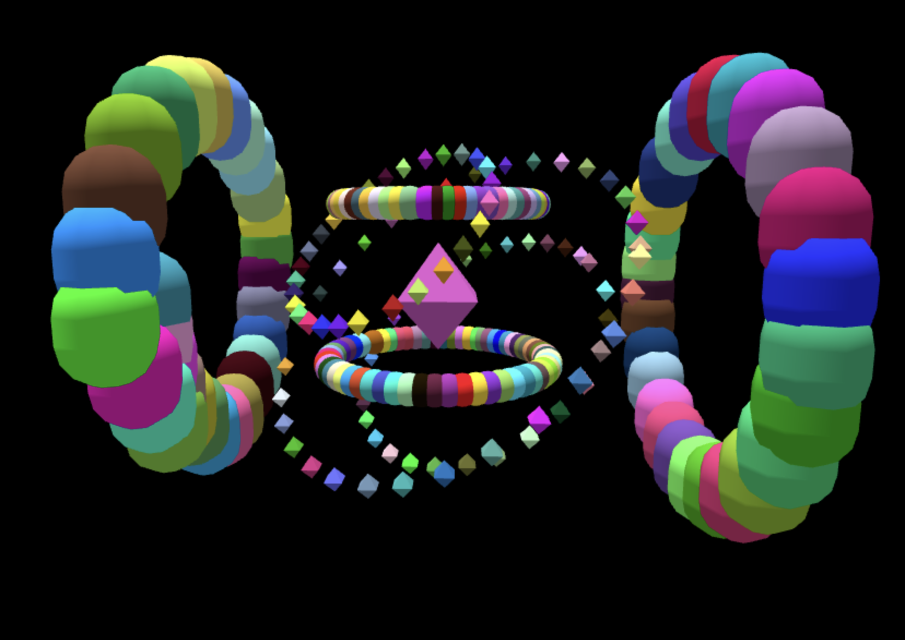
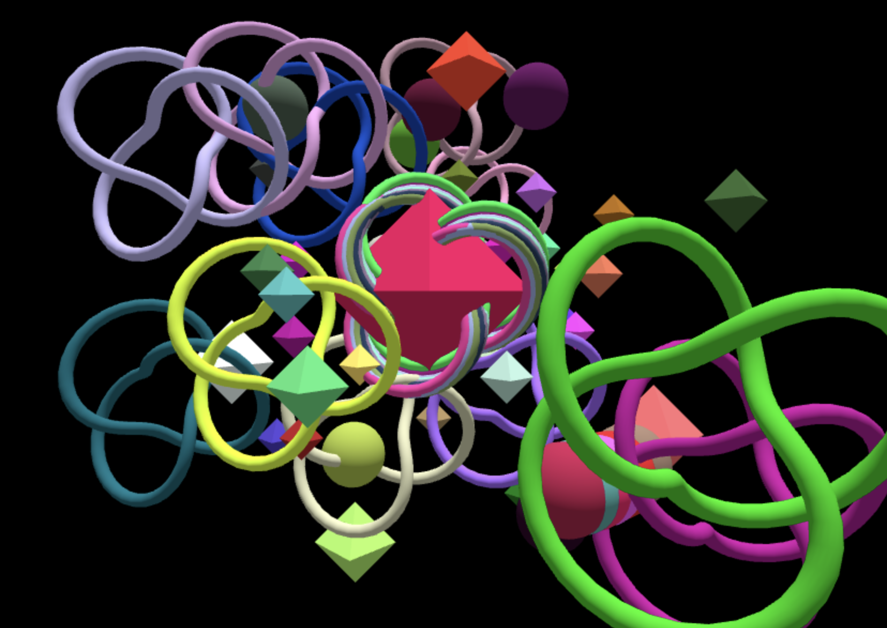

Projects
AudioMesh
AudioMesh is a web based computer graphics project that I created as a final project for CS460, computer graphics, at UMB.
It combines three.js mesh materials with audio made from sound samples using strudel, a js package for coding music. Strudel
sounds can get very complex which was a challenge to work around. I needed to balance making a semi-complex string of notes with various
instruments whilst also making it sound good, wiht the intention of having it very user friendly in that most unique iterations will be
pleasant to hear.
Creating the shapes was one of the easiest parts. I used octahedron, torus knot, sphere, and cylinder geometries in three.js. Assigning a
random color each time it is placed. To place a geometry the page will track the last key pressed( either w,e,s,d) and when the shift key
is pressed and then a trackpad or mouseclick is performed the appropriate shape will be placed. There is another feature added using tweakpane to
add a gui to the page. Making each parameter of the geometries completley free to change and customize. After the geometries are placed depending
on the type of geometry they will rotate in a specific manner. Using quaternions to rotate the objects around the center object, which can help
create complex scenes.

Another issue faced in creating this project was trying to handle speed and quantity of notes. As a default strudel will set the speed
of the sequence by the number of notes in the sequence. Setting the beats or cycles per minute manually works to a point but still adds
discrepency with sequences of different instruments. The way I decided to handle this issue is to have a max sequence of 10 notes, the
physical geometry will not dissapear but if there are already 10 notes in an instruments sequence the oldest note gets popped(at index 0)
and then the new note is appended onto the end and the sequence is updated.

Demo
ReadMe